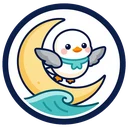
صَوْتُ الرَّاوِي Narration voice
Recorded narration on every page (ElevenLabs): Fusha read by Sarah, Egyptian by Hisham’s voice. On-screen words always stay Fusha.
الْقِرَاءَةُ التِّلْقَائِيَّةُ Auto-read
Reads each page aloud and turns the page when the narration ends. It waits on the activity pages (shell, writing, quiz). Pause any time with the ▶ / ⏸ button or the P key.
الْأَصْوَاتُ Sound effects
السِّمَةُ Theme
قِصَّةٌ مُصَوَّرَةٌ · an illustrated story
نُورِي وَالصَّدَفَةُ الصَّغِيرَةُ
قِصَّةٌ عَنْ هَذَا وَهَذِهِ
Noori and the Little Shell — a story about “this” for boys’ words and girls’ words. Tap ▶ to have it read aloud, or turn the pages yourself.
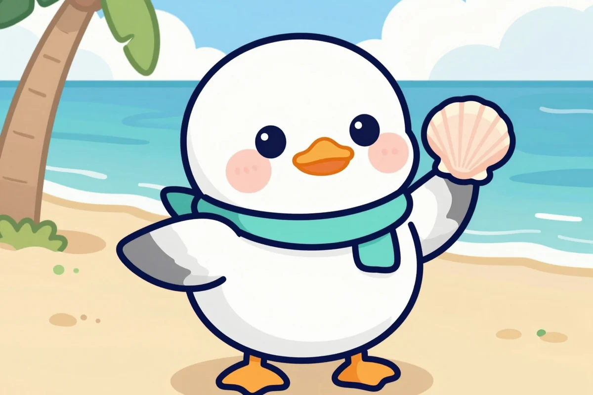
السَّلَامُ عَلَيْكُمْ يَا أَصْدِقَائِي الصِّغَارَ!
أَنَا نُورِي، النَّوْرَسُ الصَّغِيرُ، أَطِيرُ فَوْقَ بَحْرِ سَان دِييغُو.
Peace be upon you, my little friends! I’m Noori, the little seagull. I fly over the sea of San Diego.
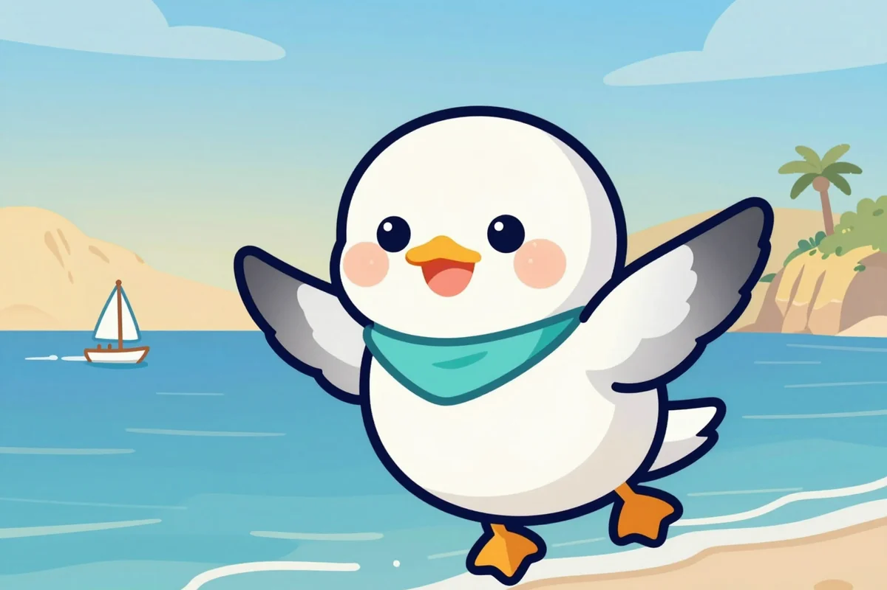
عَلَى الشَّاطِئِ، الْتَقَى نُورِي بِصَدِيقَيْنِ.
هَذَا سَامِي، وَهَذِهِ سَلْمَى.
On the beach, Noori met two friends: this is Sami, and this is Salma. Tap them to say hello.
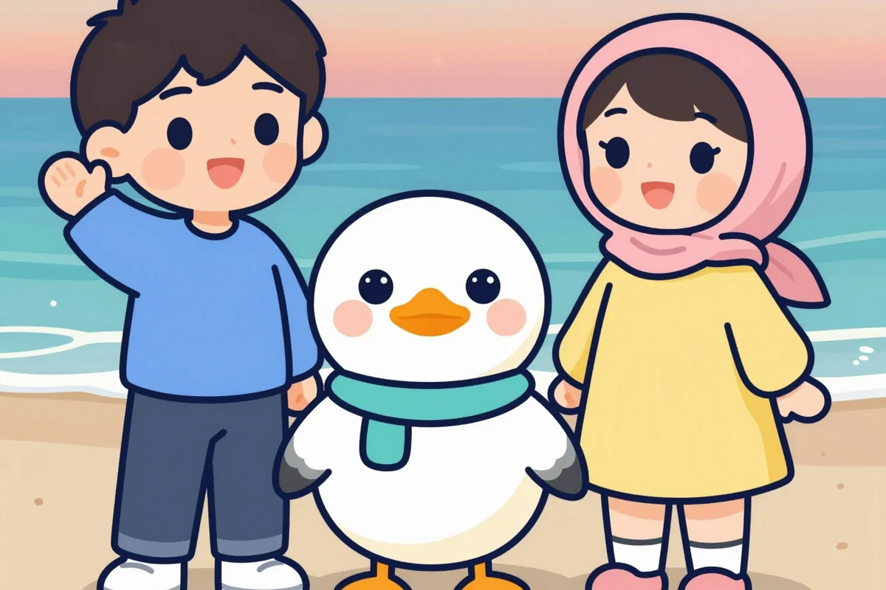
انْظُرُوا مَعِي…
هَذَا وَلَدٌ، وَهَذِهِ بِنْتٌ.
هَذَا قِطٌّ، وَهَذِهِ قِطَّةٌ.
Look with me: this is a boy, and this is a girl. This is a cat (he), and this is a cat (she). Tap each one.
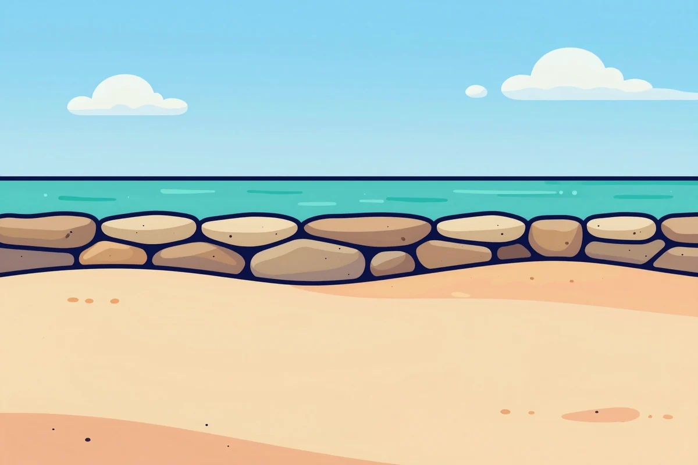
مُذَكَّرٌ ← هَذَا
سَامِي يُشِيرُ وَيَقُولُ:
هَذَا قَارِبٌ. هَذَا كِتَابٌ. هَذَا قَمَرٌ.
نَقُولُ هَذَا لِلْمُذَكَّرِ.
Sami points: this is a boat, this is a book, this is a moon. We say هَذَا for masculine words.
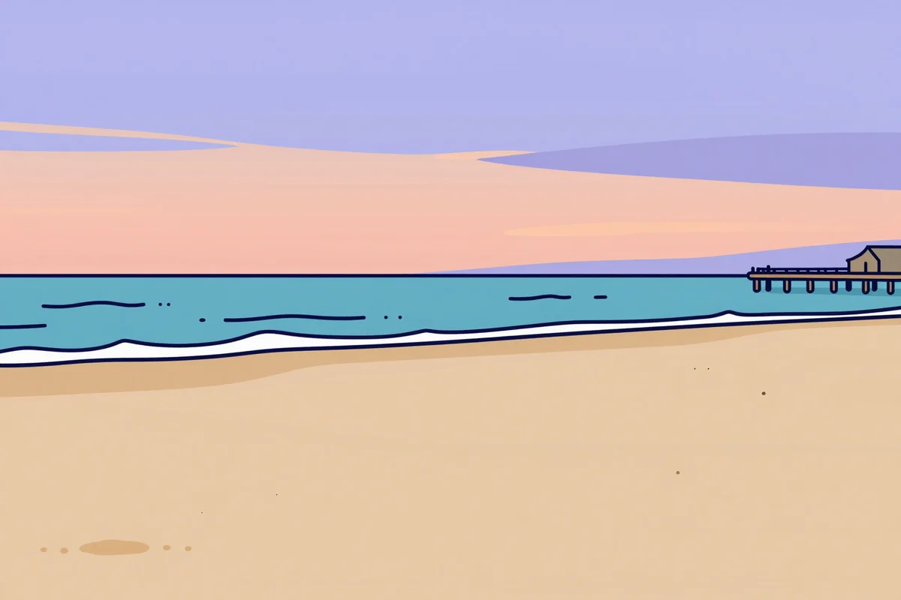
مُؤَنَّثٌ ← هَذِهِ
وَسَلْمَى تَقُولُ:
هَذِهِ سَمَكَةٌ. هَذِهِ نَخْلَةٌ. هَذِهِ صَدَفَةٌ.
نَقُولُ هَذِهِ لِلْمُؤَنَّثِ.
And Salma says: this is a fish, this is a palm tree, this is a seashell. We say هَذِهِ for feminine words.
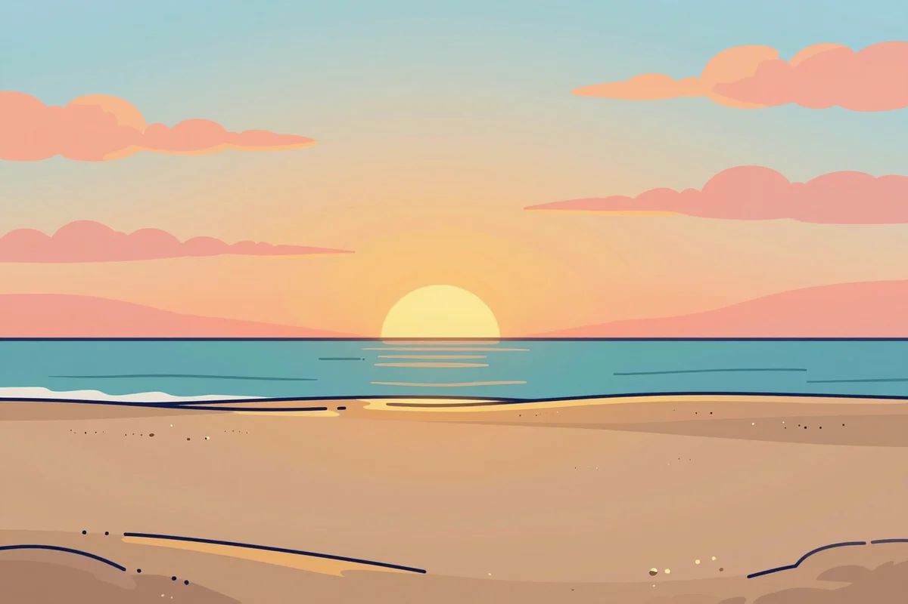
هَلْ سَمِعْتُمُ التَّاءَ الصَّغِيرَةَ فِي آخِرِ الْكَلِمَةِ؟
إِنَّهَا التَّاءُ الْمَرْبُوطَةُ!
قِطٌّ قِطَّةٌ!
Did you hear the little “t” at the end of the word? It’s the tā’ marbūṭa! Noori thinks ة looks like a little seashell — and it often makes a word feminine.
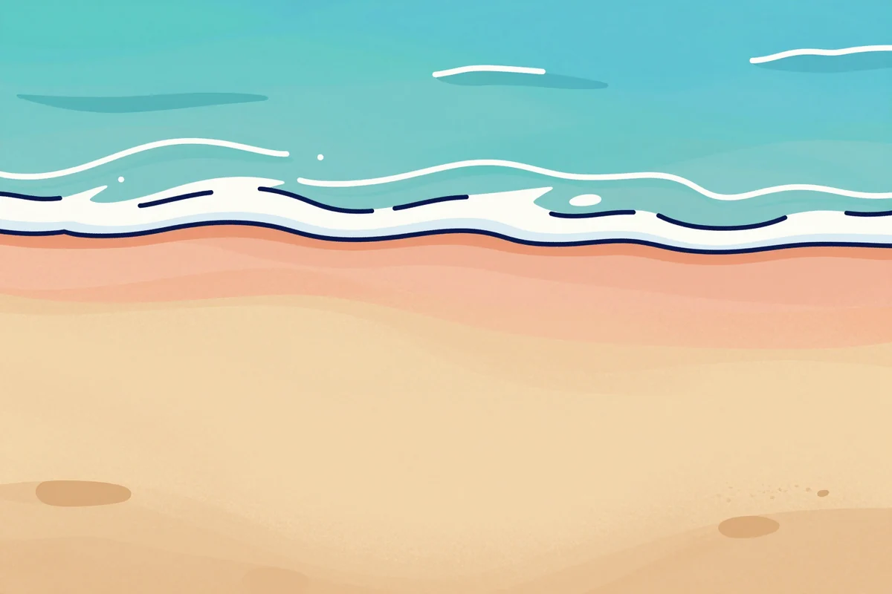
ة مِثْلُ صَدَفَةٍ صَغِيرَةٍ!الصَّدَفَةُ السِّحْرِيَّةُ · the magic shell
ضَعِ الصَّدَفَةَ فِي آخِرِ الْكَلِمَةِ، فَتَصِيرُ مُؤَنَّثَةً!
Tap the shell to put a ة at the end of the word. Watch هَذَا turn into هَذِهِ.
هَذَا مُعَلِّمٌ
a teacher (man)
هَذَا طَالِبٌ
a student (boy)
انْتَبِهْ! · careful!
قَالَتْ سَلْمَى: لَكِنْ… «بِنْتٌ» لَيْسَ فِي آخِرِهَا صَدَفَةٌ!
قَالَ نُورِي: صَحِيحٌ! بَعْضُ الْكَلِمَاتِ مُؤَنَّثَةٌ بِلَا ة:
هَذِهِ بِنْتٌ، هَذِهِ أُمٌّ، هَذِهِ شَمْسٌ.
Salma: “But بِنْت (girl) has no shell at the end!” Noori: “Right! Some words are feminine without ة — we still say هَذِهِ.”
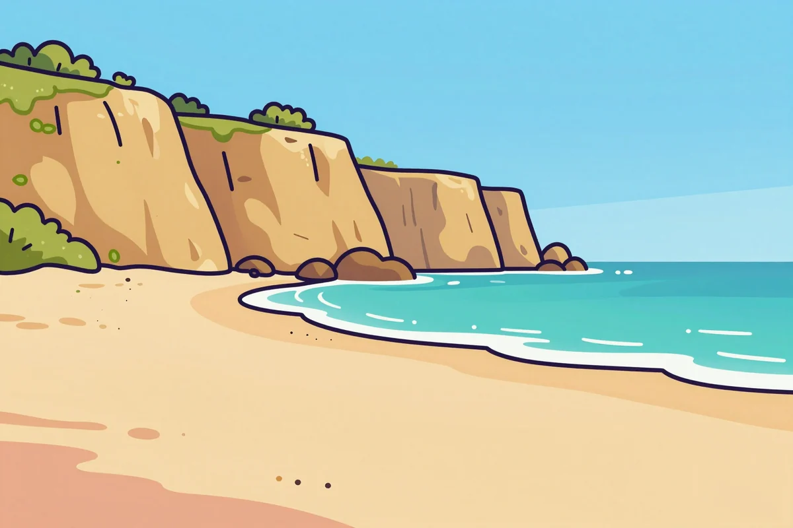
تَحَدِّي الْأَبْطَالِ · champions’ challenge
وَالصِّفَةُ تَأْخُذُ الصَّدَفَةَ أَيْضًا:
هَذَا وَلَدٌ نَشِيطٌ.
هَذِهِ بِنْتٌ نَشِيطَةٌ.
The describing word takes the shell too: this is an active boy; this is an active girl. (بِنْت has no ة — but نَشِيطَة does!)
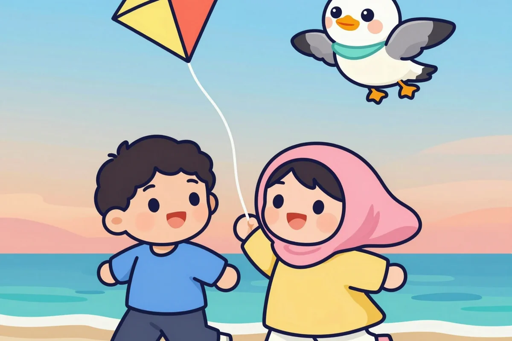
مَحَطَّةُ الْكِتَابَةِ · writing station
هَيَّا نَكْتُبْ! تَتَبَّعْ بِإِصْبَعِكَ: ة، ثُمَّ هَذَا وَهَذِهِ.
Step 1–2: trace ة, then هَذَا and هَذِهِ. Step 3: look at the picture and write a short sentence on the empty line. Finger, Apple Pencil or mouse; start at the green dot — Arabic goes right to left. Tap «انْتَهَيْتُ» when you’re done.
اكْتُبْ: هَذِهِ … Write: “this is …”
اخْتَبِرْ نَفْسَكَ · quick quiz
أَرْبَعَةُ أَسْئِلَةٍ… اضْغَطْ عَلَى الْجَوَابِ!
Four questions — tap an answer. You get a star for each one, and Noori explains every answer.
أَحْسَنْتُمْ يَا أَصْدِقَائِي!
مَاذَا تَعَلَّمْنَا؟ · what you learned
- هَذَا لِلْمُذَكَّرِ: هَذَا وَلَدٌ.
- هَذِهِ لِلْمُؤَنَّثِ: هَذِهِ بِنْتٌ.
- ة صَدَفَةٌ صَغِيرَةٌ تَجْعَلُ الْكَلِمَةَ مُؤَنَّثَةً: قِطٌّ ← قِطَّةٌ.
- بَعْضُ الْمُؤَنَّثِ بِلَا ة: بِنْتٌ، أُمٌّ، شَمْسٌ.
You learned: هَذَا for masculine, هَذِهِ for feminine, the ة “little shell”, and feminine words without ة. See you soon!
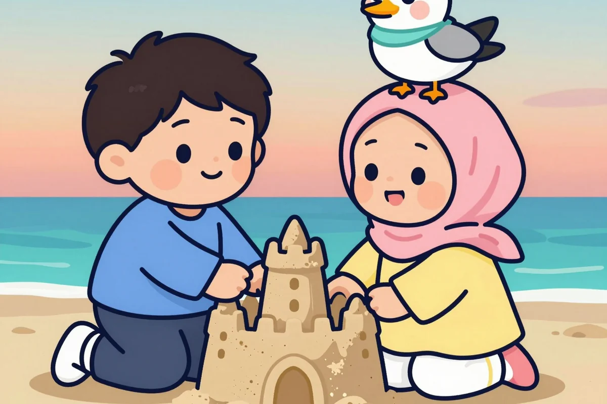